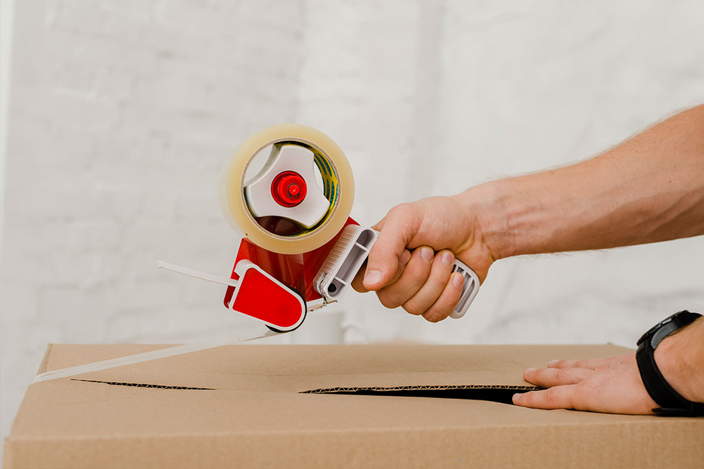

成立典故
『優良搬家公司評鑑與推廌服務』評鑑台灣之搬家公司，通過審核評鑑之業者，授證識別標誌，並刊載於崔媽媽網站， 是台灣唯一每月定期評估搬家公司的審核制度。
崔媽媽的推薦制度是持續對業者的監督與輔導，重點分為兩方面，消費者方面：提供一份真正優良的業者名單，並每月更新，並不因為時間的遞移而影響其正確性。業者方面：藉由消費者長期監督與問卷回函，讓業者找出搬家流程中最常出問題的環節，一方面做為業者自我學習、提升品質的依據，另一方面也能建立業者的信譽、鼓勵長期經營。

所以，評鑑方式不是由崔媽媽自己評鑑，而是藉由彙整每位被業者服務過的消費者所填寫的問卷來作為評鑑的依據。 而這中間若有糾紛產生，崔媽媽亦會介入處理並要求業者改善，嚴重者即取消對其之推薦。